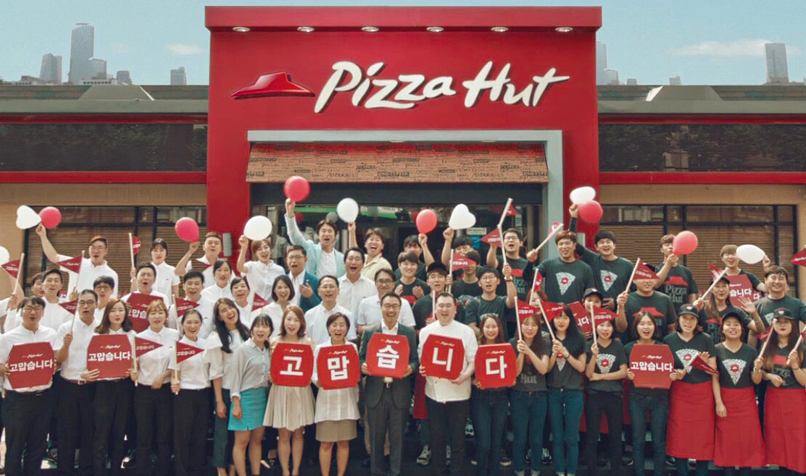
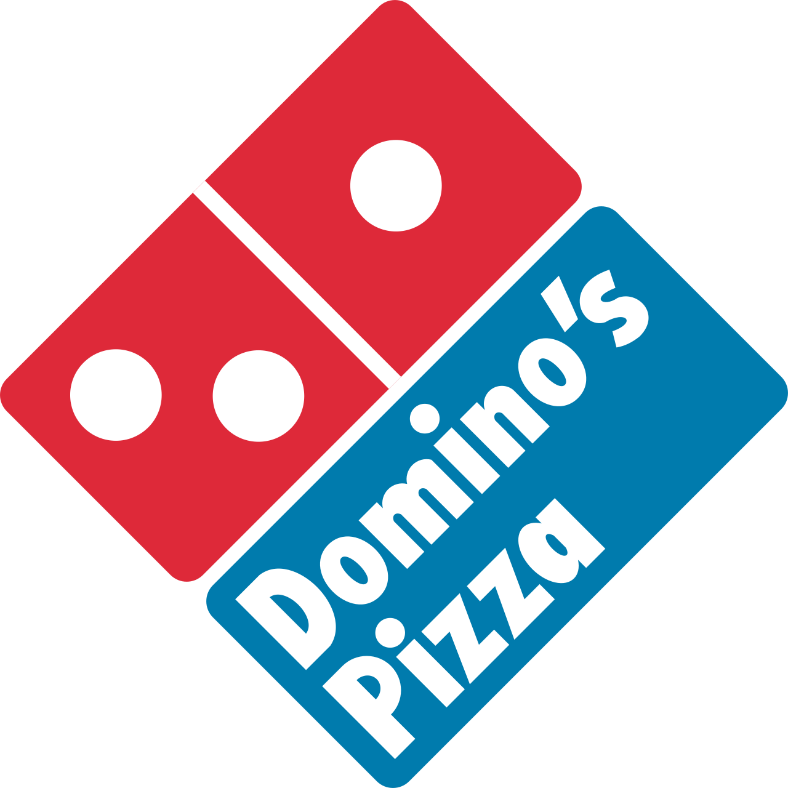

홈 > 브랜드 매거진 > 피자헛
피자헛
피자헛(Pizza Hut)은 1958년 미국 캔자스에서 창립된 세계 최대 규모의 피자 프랜차이즈 브랜드이다.
산업 분야 식음료 · 공개 등급 자료 기반 · 브랜드 평가 4.3 ★


한눈에 보는 브랜드
피자헛(Pizza Hut)은 1958년 댄 카니(Dan Carney)와 프랭크 카니(Frank Carney) 형제가 미국 캔자스주 위치타에서 어머니에게 빌린 600달러로 창업한 피자 프랜차이즈다. 간판에 여덟 글자만 들어가 'Pizza Hut'이라 이름 붙였다.
현재 모회사는 Yum Brands이며, 2024년 기준 전 세계 1만 9천여 개 매장을 운영하는 대표적 글로벌 외식 브랜드다.
브랜드 관점
핵심은 경쟁 구도다. 미국 피자 배달 시장에서 도미노(Domino's)가 약 50%로 1위, 피자헛이 약 29%로 2위, 파파존스(Papa John's)가 약 21%를 차지한다.
팬피자와 딥디시를 대중화한 원조이자 매장 식사형 프리미엄 모델로 성장했으나, 디지털 주문과 배달 속도 경쟁에서 도미노에 밀려 미국 동일 매장 매출이 열 분기 연속 하락했다. Yum Brands 산하 KFC·타코벨 대비 부진이 두드러져, 2026년 모회사가 약 27억 달러에 매각하기로 한 배경이 됐다.
한국에는 1985년 이태원 1호점으로 들어와 불고기피자·치즈크러스트 같은 현지화로 한때 호황을 누린 점도 맥락이다.
시작과 성장
1958년 위치타주립대에 다니던 댄·프랭크 카니 형제가 어머니에게 빌린 600달러로 위치타 다운타운의 작은 건물을 빌려 중고 장비로 첫 매장을 열었다. 이듬해인 1959년 프랜차이즈를 시작했고, 1963년 24개, 1966년 140개로 빠르게 늘며 위치타에 본사를 뒀다.
1969년 빨간 지붕 건축 양식을 도입했다. 1977년 매장 4천여 개로 성장한 형제는 3억 달러가 넘는 금액에 펩시코(PepsiCo)에 회사를 넘겼다.
1997년 펩시코는 외식 부문을 트라이콘(Tricon)으로 분사했고, 이 회사가 2002년 Yum Brands로 사명을 바꾸며 KFC·타코벨과 함께 국제 확장을 이끌었다.
브랜드 아이덴티티
정체성의 핵심은 1969년 등장해 1974년 로고에 반영된 상징적인 '빨간 지붕'이다. 매장에서 가족이 함께 피자를 나누는 따뜻한 경험을 표상한다.
1999년 랜도(Landor)가 흘림체와 'Pizza'의 i 위 초록 점을 더한 로고로 바꿨으나, 2019년 브랜드 뿌리로 돌아간다는 취지로 빨간 지붕 로고를 되살렸다. 타깃은 가족과 친구 단위 고객이며, 보이스는 친근하면서도 과감하고 대담함을 지향한다.
색은 붉은 피자 소스를 연상시키는 빨강을 중심으로 쓴다.
제품과 서비스
대표 제품은 겉이 바삭하고 속은 부드러운 오리지널 팬피자와 두툼한 딥디시, 가장자리에 치즈를 채운 스터프드 크러스트다. 갈릭브레드 같은 사이드도 갖췄다.
미국 기준 라지 오리지널 팬피자가 약 11달러, 슈프림 스터프드 크러스트가 약 24달러 수준의 프리미엄 라인이다. 채널은 매장 식사와 배달·포장을 함께 운영하며 모바일·온라인 주문 비중을 키우고 있다.
사람들
상위/소유 조직: 얌!
현재 상태
모회사는 미국 켄터키주 루이빌에 본사를 둔 Yum Brands이며, 피자헛 본사는 텍사스주 플레이노에 있다. 2024년 기준 매장 수는 1만 9천여 개이며 전 세계 100개국 이상에서 영업한다.
피자헛은 2025년 모회사 전체 매출의 약 12%를 차지했다. 2026년 6월 Yum Brands는 피자헛을 약 27억 달러에 매각하기로 합의했으며, 중국 사업은 얌차이나가 약 12억 달러, 그 외 지역은 사모펀드 롱레인지캐피털이 약 15억 달러에 인수한다.
브랜드 단독 연 매출 등 세부 수치는 미공개.
타임라인
BI/CI 변천사
함께 읽을 브랜드
KFC(Kentucky Fried Chicken)는 할랜드 샌더스 대령이 창립한 미국 기반의 글로벌 프라이드 치킨 프랜차이즈이다.
펩시(Pepsi)는 1893년 미국 노스캐롤라이나주 뉴번의 약사 케일럽 브래덤이 만든 탄산음료에서 출발해 1898년 '펩시콜라'로 개명된 음료 브랜드다. 1965년...
네슬레(Nestlé)는 스위스 브베에 본사를 둔 세계 최대 규모의 식음료 다국적 기업이다.
맥도날드는 가장 평범한 소비재를 세계 어디서나 읽히는 대중문화의 기호로 바꾼 브랜드다. 햄버거와 감자튀김은 단순한 메뉴지만, 맥도날드는 속도, 표준화, 접근성, 익숙...
Be
Bezi
식음료 · 편집 검수BeziBezi는 2024년에 기록된 Food Brands 계열의 브랜드 아이덴티티 사례입니다. Red Antler가 아이덴티티 작업의 디자이너로 기록되어 있습니다. 공개...
Ma
Magic Spoon Treats
식음료 · 편집 검수Magic Spoon Treats매직스푼은 그렉 세위츠와 가비 루이스가 2019년 미국에서 선보인 저당·고단백 시리얼 브랜드다. 어린 시절 토요일 아침 만화를 보며 먹던 알록달록한 시리얼의 즐거움을...
 식음료 · 편집 검수Ribena
식음료 · 편집 검수Ribena리베나는 블랙커런트(Ribes nigrum)를 원료로 한 영국의 대표적 과일 농축 음료 브랜드다. 이름 자체가 블랙커런트의 학명에서 유래했으며, 진한 보라빛 베리와...

식음료 · 자료 기반도미노피자도미노피자(Domino's Pizza)는 1960년 미국에서 시작된 글로벌 피자 배달·테이크아웃 프랜차이즈이다.